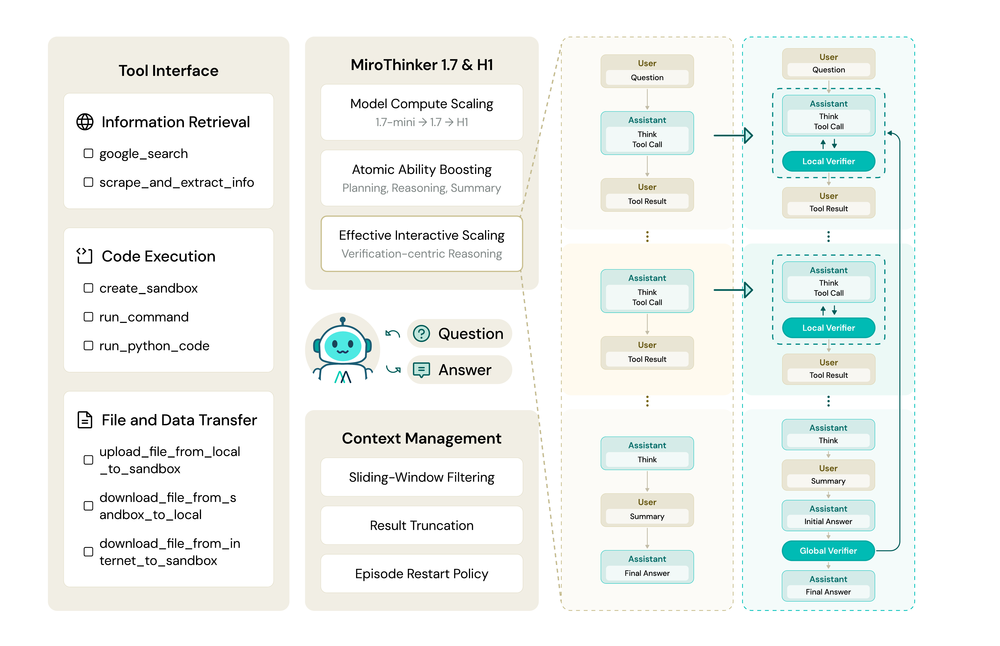
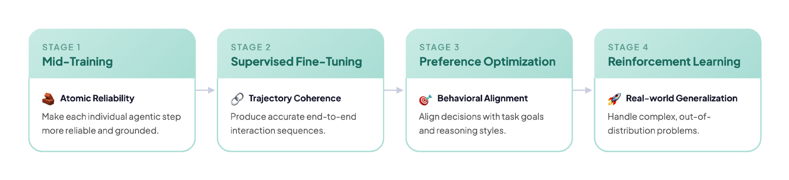
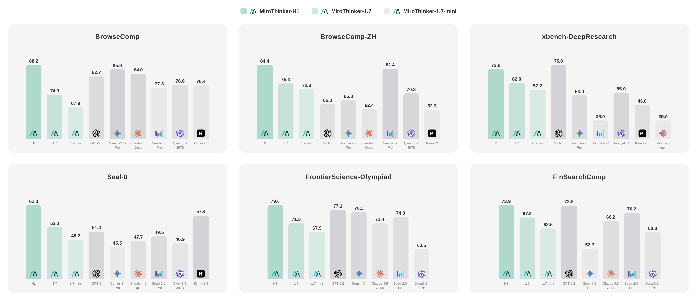
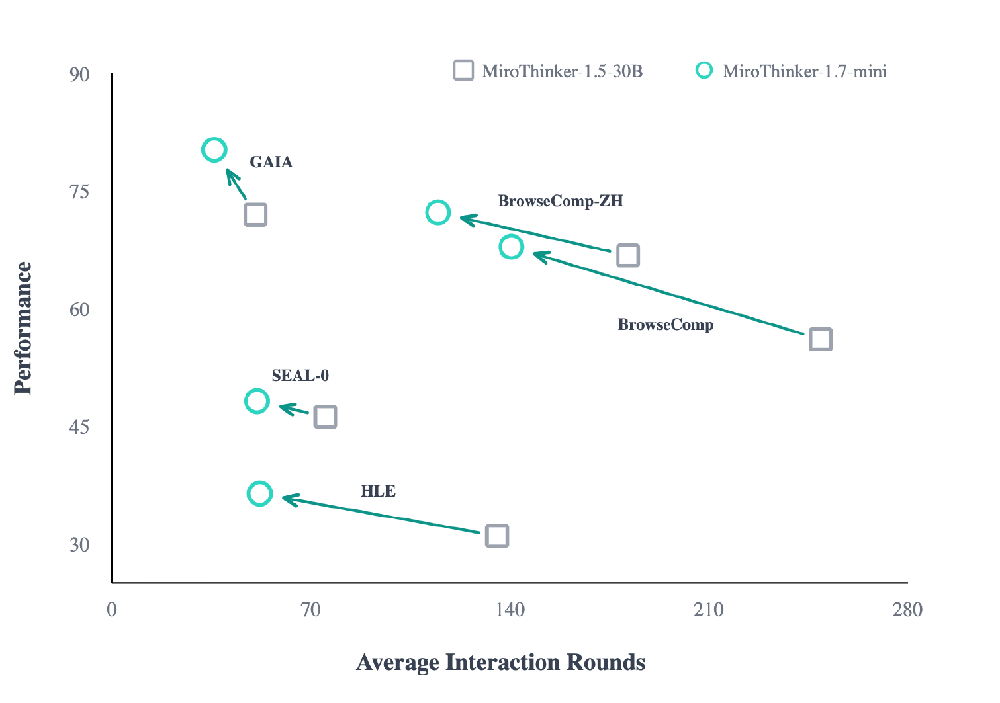

核心问题：重型 Research Agent 的挑战
复杂长程推理面临三大挑战：交互步骤可靠性（错误级联传播）、整体推理一致性（需要连贯证据链）、heavy-duty 能力要求（open-web research、scientific reasoning、financial analysis）。
与单纯拉长 reasoning chain 不同，Verification Agent 将验证直接嵌入推理过程——Local Verification 评估中间步骤，Global Verification 审计整体轨迹。

MiroThinker-1.7: Agentic Mid-Training
强调三大核心能力：结构化规划（Structured Planning）、上下文推理（Contextual Reasoning）、工具交互（Tool Interaction）。

分解复杂任务为可执行的子步骤，建立清晰的执行路径和依赖关系。
在长上下文中保持推理连贯性，有效利用中间结果和外部信息。
熟练使用搜索、代码执行、文件操作等工具，支持 300 次工具调用/任务。
应扩展 effective interaction，而非 interaction count 本身。每一步都需要强 atomic capability：规划、推理、工具执行。
实验结果与分析
在 BrowseComp（信息检索）、GAIA（通用 AI 助手）、HLE（长程推理）等基准上评测。MiroThinker-H1 在多个任务上达到 SOTA。

| 模型 | BrowseComp | GAIA | HLE |
|---|---|---|---|
| 商业模型 | |||
| GPT-5-high | — | 76.4 | 35.2 |
| 开源模型 | |||
| MiroThinker-1.7 (mini) | — | 84.3 | — |
| MiroThinker-1.7 | 86.1 | 86.9 | 38.5 |
| MiroThinker-H1 | 88.2 | 88.5 | — |
MiroThinker-H1 在 GAIA 上比 GPT-5-high 高 +12.1，在 BrowseComp 上达到 88.2（第一）。开源版本 MiroThinker-1.7 也展现了强大竞争力。

Research Agent 的关键不是更多搜索，而是把验证内嵌进推理过程。Verification 是连接规划与执行的桥梁。